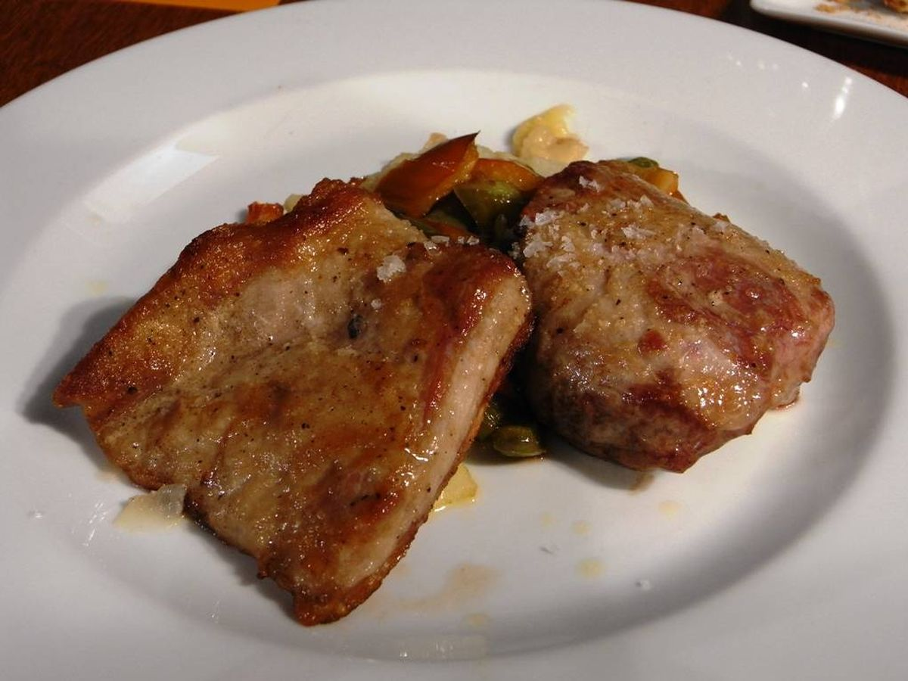

HOME
Pork "secret"

Description
Known in Spanish as "secreto de cerdo",
this part of the pig is delicious and
doesn't necessarily involve making a long preparation.
It has no bones, unlike other parts, and it's a bit expensive, but worth it.
Ingredients
-
Secreto de cerdo
-
Garlic, salt
Steps
-
Buy the meat.
-
At home, heat the frying pan. You can season the meat any way you want.
-
Once the frying pan is hot, put there the meat. Fire should not be very intense, for it takes time to prepare the meat.
-
Serve and eat.
Other recipes